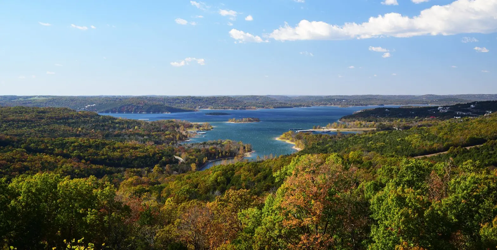
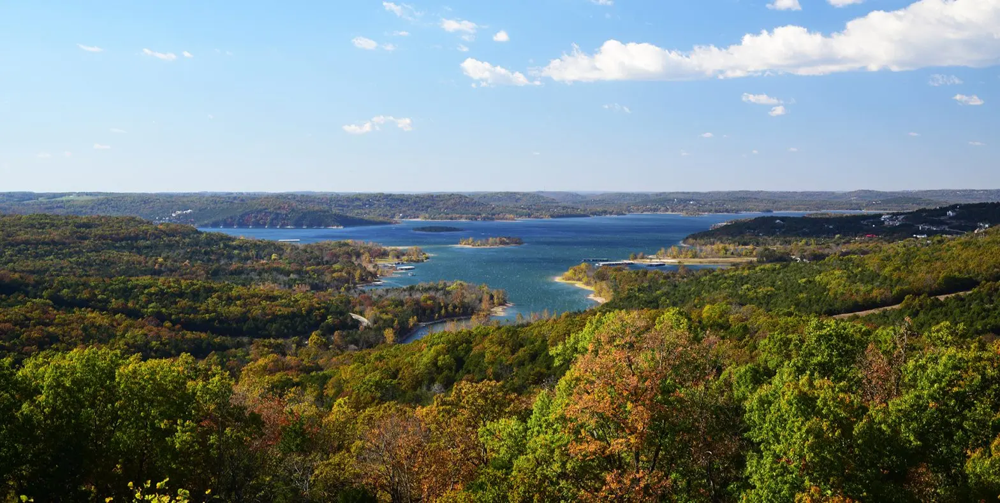

Missouri — AQSHning markaziy qismida joylashgan shtat bo‘lib, u 1821-yil
10-avgustda AQSHga 24-shtat sifatida qo‘shilgan. Shtat tarixan G‘arb va
Sharq o‘rtasidagi ko‘prik bo‘lgan va Missisipi daryosi orqali savdo-sotiq
rivojlangan.
🗺️ Geografik joylashuvi:
Shimolda: Iowa Sharqda: Illinois, Kentucky, Tennessee Janubda: Arkansas
G‘arbda: Kansas, Nebraska, Oklahoma
Hududda Missisipi va Missouri daryolari oqadi. Shuningdek, tog‘li va tekis
hududlar ham bor: Ozark tog‘lari, Missouri vodiysi va shimoliy
tekisliklar.
💼 Iqtisodiyoti:
Asosiy sohalar: Qishloq xo‘jaligi: makkajo‘xori, soya, qoramol, parranda
Sanoat: avtomobilsozlik, aerokosmik sanoat, farmatsevtika Transport va
logistika (shtat AQSHning markazida joylashganligi sababli) Pivo ishlab
chiqarish (Anheuser-Busch — St. Louisda joylashgan) St. Louis va Kansas
City — iqtisodiy markazlar.
🏞️ Diqqatga sazovor joylari:
Gateway Arch (St. Louis) — AQSHdagi eng baland yodgorlik Lake of the
Ozarks — dam olish va suv sportlari uchun mashhur joy Mark Twain National
Forest — tabiat yurishlari, kamping va baliq ovlash Silver Dollar City
(Branson) — o‘yin parki va an’anaviy amerika madaniyati Kansas City Jazz
District — musiqiy tarix markazi
🎭 Madaniyat:
Missouri o‘zining country, jazz, va blues musiqasi bilan mashhur. Branson
— musika shoulari va jonli chiqishlar markazi. Tarixiy shaxslar: yozuvchi
Mark Twain (Tom Sawyer va Huckleberry Finn muallifi) ushbu shtatdan
chiqqan.
 
